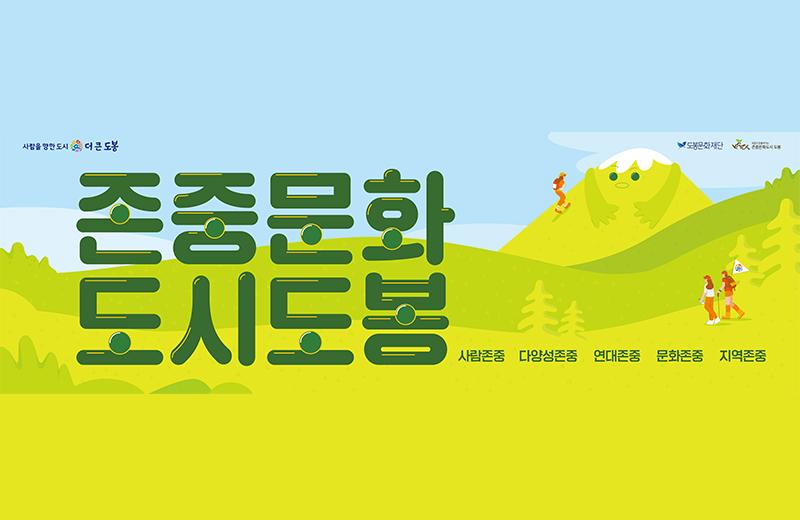

- 
-
씨알의 이야기가 가득한
존중문화도시도봉
주민이 주체가 되어 직접 아이디어를 제안하고 기획하는 문화워크숍입니다.
기획된 아이디어는 주민기획100단 사업으로 연결됩니다.
문화도시추진단(거버넌스)은 함께 공감할 수 있는 도시문화를 만들어나갈 필요성과
해결방안을 찾기 위하여 소통하고 협업하는 주민주도의 협의체입니다.
문화도시 추진단 2차 연구모임ㅇ 일 시: 2021. 12. 8.(수) 저녁 (Zoom 온라인)ㅇ 참 석: 김영현 전)지역문화진흥원장, 민경찬 추진단장 외 20여명ㅇ 회의 음성자료 출처: 문화도시 추진단장 민경찬
2021.12.31
2021 존중문화도시 도봉 주민거버넌스 문화도시추진단 주민주도형 포럼□ 일 시: 2021. 11. 3.(수) 15:00 ~ 18:00□ 장 소: 씨알방학간 3층, 커뮤니티스페이스 씨알□ 주최․주관: 존중문화도시 도봉 주민거버넌스 문화도시추진단 문화예술분과□ 지 원: 도봉문화재단 문화도시사무국
2021.12.31
□ 행사명: 2021존중문화총회□일시: 12. 14.(화) 19:00 ~ 21:00□장소: 온라인 진행(ZOOM 화상회의/추진단 단체채팅방 투표)□주최/주관: 문화도시추진단□주요내용❍ 2021년 문화도시추진단 성과 공유;❍ 예비문화도시 선정 과정 공유❍ 신입 정위원 및 기존 정위원간 상견례 진행❍ 문화도시추진단 명칭 변경 여부 투표(무기명) 진행❍ 문화도시추진단 운영 원칙 수정보완 건 투표(무기명) 진행❍ 문화도시추진단 대표 선출 건 투표(무기명) 진행&❍ 향후 문화도시 추진 일정 공유
2021.12.31
문화도시 도봉의 소식을 확인해주세요
서울시 도봉구 제4차 예비문화도시 선정 축하공연 "참새들 콘서트" - "한국전통예술원 춤과 음악"의 전통연희 한마당 - "본 아트랩" 소속 음악감독 및 뮤지컬 배우들의 뮤지컬 갈라콘서트 - 퓨전 음악밴드 "노올량"의 겨울밤의 선율https://youtu.be/rFUimF3j4RE
예비문화도시 선정 기념 <참새들 콘서트> 2021년 한 해 동안 예비문화도시 선정을 위해 방앗간을 지나치지 못하는 참새들처럼 문턱이 닳도록 드나들며, 애정과 관심을 쏟아 부었던 도봉주민들의 마음을 격려하고 노력을 존중하는 힐링 문화공연을 기획하였습니다! 새로운 도봉, 새로운 문화도시, 새 얼굴의 뮤지션으로 찾아뵙니다-ㅁ 공연 일시 : 2021. 12. 11 (토) * 공연별 장소 및 시간 상이(첨부 이미지 참조)ㅁ 공연별 개요 (시간 / 장소) 1) 14:00 / "한국전통예술원 춤과 음악"의 전통연희 한마당(@평화도봉공원) 2) 16:00 / "본아트랩" 소속 음악감독 및 뮤지컬 배우들의 뮤지컬 갈라콘서트(@씨알방학간 3층 커뮤니티 스페이스 씨알) 3) 19:00 / 퓨전 음악밴드 "노올량"의 겨울밤의 선율(@ 씨알방학간 3층 커뮤니티 스페이스 씨알) - 주최 : 도봉구청 / 주관 : 본아트랩 - "한국전통예술원 춤과 음악"의 전통연희 한마당 - "본 아트랩" 소속 음악감독 및 뮤지컬 배우들의 뮤지컬 갈라콘서트 - 퓨전 음악밴드 "노올량"의 겨울밤의 선율https://youtu.be/rFUimF3j4RE